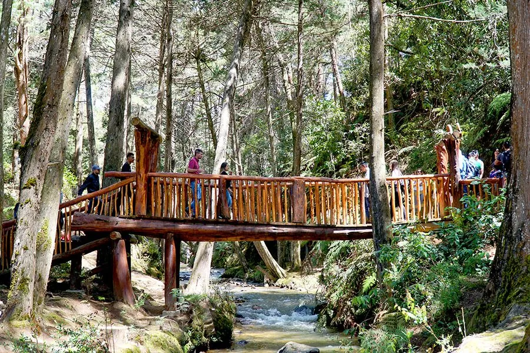

Medellín · Colombia
Parque Arvi is een nationaal park in de heuvels boven Medellín, bereikbaar via een unieke combinatie van metro en twee kabelbaanlijnen. De rit zelf — waarbij je boven de stad zweeft met adembenemend uitzicht — is al een attractie op zich.
Het park biedt wandelpaden door inheems bos, fris bergklimaat (beduidend koeler dan de stad), een weekend marktje met lokale producten, en rust. Het contrast met de drukke stad beneden is enorm — in 40 minuten van stedelijke chaos naar stille natuur.

Parque Arví Just a 20-minute cable-car ride from Medellín, Parque Arví protects a huge swathe of mountain wilderness high above the Valle de Aburra and is a tranquil and relaxing escape from the busy streets of the city. Located in the Santa Elena district, the Parque Arví covers more than 1750 hectares of gently undulating terrain at a chilly 2500m that is perfect for hiking, cycling, bird-watching or just chilling out and enjoying a picnic in the fresh mountain air.
On the eastern slopes of the Aburrá valley, Parque Arví is an ecological nature reserve where you can walk pre-Hispanic trails and enjoy the fresh air and scenery. The park covers more than 1000 hectares of forest and meadow at altitude, offering hiking, cycling and birdwatching. Access is via the Metrocable line L from Metro station Acevedo — the cable car ride itself offers spectacular views over the city before arriving at the park entrance.
• KRITIEK: Niet uitstappen aan de tussenhaltes van de Línea K — doorrijden naar Santo Domingo voor de transfer naar Línea L naar het park
• Neem een lichte regenjas mee — het park is aanzienlijk koeler en bewolkter dan de stad
• Op weekenden is er een kleine markt met lokale landbouwproducten en ambachten
• Combineer met een stop bij de wijk Santo Domingo Savio voor uitzichten over de stad
• De gehele rit (metro + 2 kabelbanen) is zelf al een spectaculaire ervaring